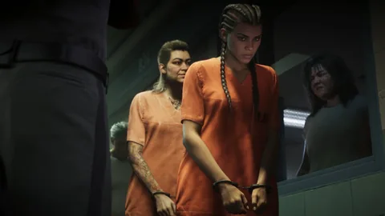
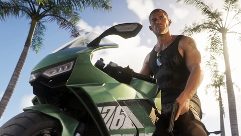
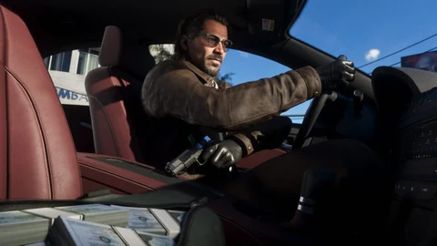

Personaggi · GTA VI
I personaggi di GTA VI
Chi sono Jason, Lucia e le persone che incrociano la loro strada? Questi ritratti collegano i personaggi presentati da Rockstar alle persone che li circondano e alle regioni di Leonida.
Esplora i loro legami e le scene ufficiali da ogni scheda. Essere nella storia non significa che il personaggio sarà giocabile; le descrizioni si limitano alle informazioni pubblicate. Capire gli stati.
Le 8 schede

Jason Duval
Vorrebbe una vita facile; le cose continuano a complicarsi.
Ex militare cresciuto tra i truffatori, Jason lavora per i trafficanti delle Keys, la cosa che sa fare meglio. Vorrebbe una vita facile; l’incontro con Lucia complicherà tutto.
Vedi la scheda
Lucia Caminos
Suo padre le ha insegnato a combattere appena ha imparato a camminare.
Suo padre le ha insegnato a combattere appena ha imparato a camminare. Combattere per la sua famiglia l’ha mandata nel penitenziario di Leonida; appena uscita, vuole fare solo colpi intelligenti.
Vedi la scheda
Cal Hampton
E se tutto quello che si legge su internet fosse vero?
Amico di Jason e socio di Brian, Cal si sente più al sicuro a casa sua, ad ascoltare le comunicazioni della guardia costiera con qualche birra e qualche scheda di navigazione in incognito aperta. E se tutto quello che si legge su internet fosse vero?
Vedi la scheda
Boobie Ike
Tutto è una questione di cuore: il Jack of Hearts.
Leggenda locale di Vice City, Boobie ha trasformato i suoi anni di strada in un impero legale: immobili, il club Jack of Hearts e l’etichetta Only Raw Records, fondata con Dre’Quan. Gli manca solo una hit.
Vedi la scheda
Dre’Quan Priest
Only Raw… Records.
Più hustler che gangster, Dre’Quan ha sempre puntato alla musica. Ha messo sotto contratto Real Dimez, si è messo in società con Boobie in Only Raw Records e conta di conquistare tutta la scena di Vice City.
Vedi la scheda
Real Dimez
Video virali, ritornelli virali.
Bae-Luxe e Roxy, amiche dai tempi del liceo, hanno trasformato i loro traffici in pezzi rap e in una presenza online costante. Sotto contratto con Only Raw Records dopo un primo successo, sperano che il fulmine colpisca due volte.
Vedi la scheda
Raul Bautista
L’esperienza conta.
Rapinatore di banche navigato, Raul recluta partner pronti a correre i rischi che rendono di più. La sua imprudenza alza la posta a ogni colpo; la sua squadra dovrà stargli dietro o tirarsi fuori.
Vedi la scheda
Brian Heder
Niente di meglio di un Mudslide al tramonto.
Trafficante vecchio stampo, cresciuto nell’età d’oro del contrabbando nelle Keys, Brian fa ancora passare la sua merce dal suo cantiere navale insieme a Lori, la sua terza moglie. Ospita Jason in cambio di qualche favore.
Vedi la schedaFonti ufficiali
Cosa ha mostrato Rockstar
Otto schede, tre video, qualche intervista: cosa dice di loro ogni appuntamento ufficiale.
- Visto in un media
Trailer 1
Lucia apre le danze, in tuta arancione, durante un colloquio al penitenziario di Leonida; poi con Jason in una stanza dello Starlet Motel e durante il colpo a un negozio Uncle Jack’s Liquor. Jason non viene ancora nominato.

Immagine ufficiale Rockstar Games - Ufficiale
Otto schede “Only in Leonida” e Trailer 2
Rockstar nomina Jason Duval e Lucia Caminos, i personaggi che controlli, poi Cal Hampton, Boobie Ike, Dre’Quan Priest, Real Dimez (Bae-Luxe e Roxy), Raul Bautista e Brian Heder, ognuno con uno slogan. Il Trailer 2 mostra Jason sul suo tetto nelle Keys, Brian che lo manda a riscuotere, Jason che va a prendere Lucia all’uscita dal carcere (0:52), Cal al Rusty Anchor (1:29).

Immagine ufficiale Rockstar Games - Ufficiale
Edizioni
I testi delle edizioni parlano del duo nel presente del gioco: outfit, tatuaggi e acconciature “per Jason e Lucia”, pickup e rifugio “di Jason”. Nessun nuovo personaggio.
Immagine ufficiale Rockstar Games - Visto in un media
Extended Look
Quattro missioni: un recupero per Boobie che va storto, un incontro con Brian e Lori al bar Effluvia (10:50), Lucia al volante per Raul durante un inseguimento, una sparatoria all’inaugurazione del Megamundo. Il gioco passa da Jason a Lucia in pieno inseguimento (18:41). Cal chiude con un monologo.

Immagine ufficiale Rockstar Games
Rob Nelson, co-direttore di Rockstar North, alla stampa tra il 27 agosto e il 4 settembre 2026: la storia d’amore è facoltativa; il passaggio da un personaggio all’altro a volte è libero, a volte imposto; prima del duo erano stati presi in considerazione quattro personaggi; la sua partita è durata circa 80 ore, contenuti facoltativi compresi.
Osservazioni dei giocatori
Cosa ha identificato la community
I fan hanno guardato e ascoltato con attenzione. Ecco cosa ipotizzano, con prudenza.
Un attore riconosciuto dalla voce resta un’identificazione della community, anche se lo riprendono dieci siti.
Domande aperte
Cosa resta da confermare
Quello che le schede non dicono, non lo indoviniamo.
Altri personaggi giocabili?
Non annunciati: Rockstar parla solo di Jason e Lucia.
Il cast
Nessun attore confermato da Rockstar; solo uno ha confermato di persona un ruolo, senza dire quale.
Il ruolo di Raul, Boobie e Real Dimez
Datori di lavoro, partner o ostacoli? La trama non è stata pubblicata.
Lucia in libertà vigilata?
Rockstar dice che esce di prigione. Il braccialetto elettronico e la libertà condizionale sono interpretazioni della stampa.
La durata della storia
Circa 80 ore per la partita del co-direttore, contenuti facoltativi compresi: non è una durata ufficiale.
Strumenti del sito
Cosa cambia per te
I ritratti portano alla mappa, alle residenze e al calcolatore.
Domande
Domande frequenti
Le domande che si scrivono in un motore di ricerca, con risposte brevi e datate.
Chi è Lucia Caminos?
Chi è Jason Duval?
Quanti personaggi giocabili ci sono in GTA VI?
Chi dà la voce a Lucia e Jason?
Si può cambiare personaggio in qualsiasi momento?
Jason e Lucia stanno insieme?
21 fonti consultate
Fonti e stati
Ogni affermazione di questa pagina ha uno stato e viene da una pagina aperta alla data indicata. Le pagine di Rockstar sono citate con la loro ultima apertura diretta; i loro testi sono stati riletti il 27 settembre 2026 nelle fonti che li riportano.
Ufficiale
Pagina o video pubblicato da Rockstar (sito di GTA VI, Newswire, trailer, Extended Look), o dichiarazioni di un responsabile di Rockstar riportate da un media identificato, con la data.
Visto in un media
Ciò che un’immagine o una sequenza ufficiale mostra, senza un testo di Rockstar che lo dica: un’inquadratura di un trailer, uno screenshot, un momento dell’Extended Look, con il minutaggio quando è noto.
Identificazione della community
Collegamento fatto da giocatori, una wiki o un sito di fan (luogo reale, attore, contea). Citato come tale, mai presentato come confermato.
Da confermare
Domanda senza risposta pubblicata: prezzo, acquisto, accesso, ruolo nella storia. La scriviamo per non doverla indovinare.
Pagine consultate
- UfficialeSito ufficiale di Grand Theft Auto VI (pagine “Only in Leonida”, edizioni, preordini)
Sei regioni e otto personaggi presentati il 6 maggio 2025; testi delle edizioni del 24 giugno 2026. Riletto il 27/09/2026 nelle pagine che lo citano (rockstargames.com non raggiungibile dal nostro laboratorio quel giorno).
- UfficialeRockstar Games: video ufficiali di GTA VI (Trailer 1, Trailer 2, An Extended Look)
Trailer 1 del 4 dicembre 2023, Trailer 2 del 6 maggio 2025, Extended Look del 27 agosto 2026: i fotogrammi del sito vengono da lì.
- UfficialeRockstar Games: screenshot ufficiali di GTA VI
Screenshot delle regioni e dei personaggi (maggio 2025) e delle edizioni (giugno 2026); i locali nominati nei titoli degli screenshot.
- UfficialeGame Informer: Rockstar Details Nine of Grand Theft Auto VI’s Characters
Otto schede ufficiali per nove personaggi (Real Dimez è un duo).
- UfficialeVariety: GTA 6 trailer 2, Jason and Lucia
Riassunto ufficiale: un colpo facile va storto, e il duo si ritrova nel lato oscuro del posto più soleggiato degli Stati Uniti.
- UfficialeGTABase: Jason Duval
Riprende la scheda ufficiale di Jason (esercito, Keys, trafficanti, Brian); il presunto attore è indicato come non confermato.
- UfficialeGTABase: Lucia Caminos
Riprende la scheda ufficiale di Lucia (penitenziario, Liberty City, colpi intelligenti); Manni L. Perez è indicata come ipotesi dei fan.
- UfficialeGTABase: Cal Hampton
Riprende la scheda ufficiale di Cal (guardia costiera, birre, schede in incognito); Bobby Moynihan è indicato come ipotesi.
- Identificazione della communityGTA Wiki: Jason Duval, Lucia Caminos, Cal Hampton, Boobie Ike, Dre’Quan Priest, Real Dimez, Raul Bautista, Brian Heder, Lori Heder (una pagina per personaggio)
Slogan ufficiali, apparizioni con minutaggio nei trailer e nell’Extended Look, accostamenti (City Girls, Gunplay, Duval, King of Diamonds).
- Visto in un mediaGTA Wiki: inquadrature dei trailer, con minutaggio
Inquadratura per inquadratura del Trailer 1 e del Trailer 2, con i minutaggi usati in questa pagina.
- Visto in un mediaGTA Wiki: Grand Theft Auto VI, An Extended Look
Trasmesso il 27 agosto 2026 (Netflix, poi YouTube), 26 min 48 s, quattro missioni: Venture Apartments, Effluvia, inseguimento con Raul, Megamundo.
- Visto in un mediaEngadget: 20+ things you may have missed in the GTA 6 extended look
Effluvia (10:50), poligono di tiro (18:31), passaggio da Jason a Lucia (18:41), arma nascosta dietro la schiena prima di un negozio (17:57).
- Visto in un mediaEngadget: breaking down the GTA 6 extended look
L’appartamento, Jason davanti alla TV, Real Dimez in cabina di registrazione.
- UfficialeTechRadar: Rob Nelson (IGN), la storia d’amore è facoltativa
Rob Nelson, co-direttore di Rockstar North: la relazione tra Jason e Lucia si costruisce se il giocatore lo vuole.
- UfficialeGamesRadar+: Rob Nelson (Famitsu), il cambio di personaggio a volte dipende dalla storia
Passaggio libero o imposto a seconda della missione; Jason è un ex delle forze speciali.
- UfficialeDexerto: Rob Nelson (IGN), GTA 6 ha quasi avuto quattro personaggi giocabili
Quattro personaggi presi in considerazione, un duo scelto per far affezionare il giocatore.
- UfficialeSVG: Rob Nelson ha finito la sua partita in circa 80 ore
Circa 80 ore, storia principale e una parte dei contenuti facoltativi.
- Identificazione della communityPush Square: the first GTA 6 actor has confirmed his involvement
Stephen Root conferma un ruolo senza dire quale; il legame con Brian Heder viene dai fan e dalla stampa.
- Identificazione della communitySVG: GTA 6 extended look, the actors fans think they recognise
Dylan Rourke per Jason: un nome che circola, mai confermato.
- Identificazione della communityGamesRadar+: il braccialetto elettronico di Lucia e l’ordine delle scene del Trailer 1
Alcuni giocatori deducono l’ordine delle scene dall’assenza del braccialetto elettronico durante il colpo.
- Identificazione della communityDexerto: fans convinced they’ve found the trailer’s strip club in real life
Jack of Hearts accostato al King of Diamonds di Miami.
Cosa non facciamo. Nessun dato dai leak del 2022 o del 2026, nessun prezzo inventato, nessun accostamento presentato come confermato. Gli stati sono spiegati nel Tutorial.
Continua a esplorare


Il calcolatore
Il tuo primo grande acquisto, missione per missione?
Il business plan fa le sue domande e ti dice cosa fare per primo, con un piano di riserva.
E dopo?
Il seguito si scrive il 19 novembre 2026.
Ogni scheda si completerà con il gioco: cosa ci si trova, cosa ci si fa, quanto rende. Niente di inventato fino ad allora.